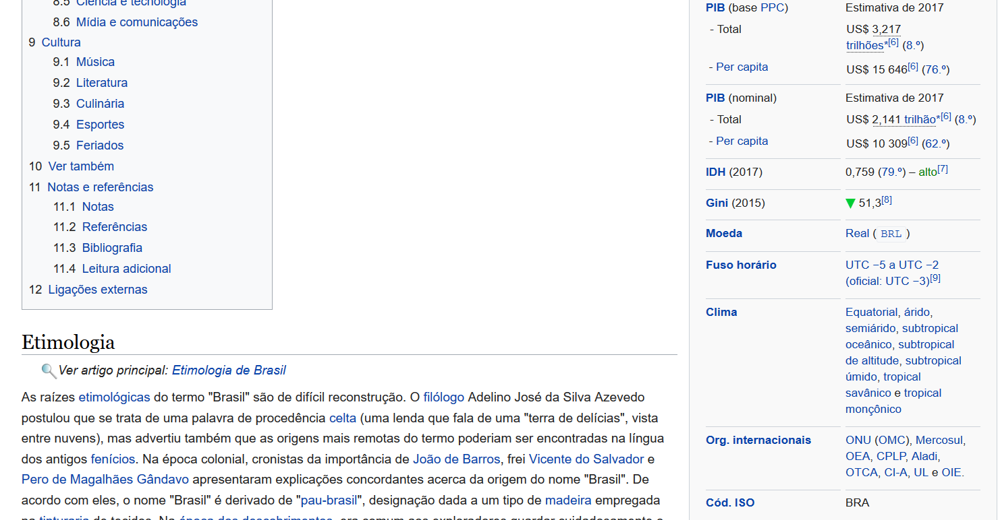
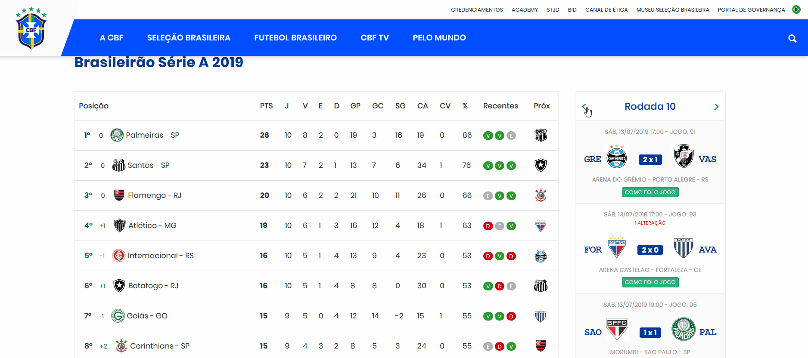
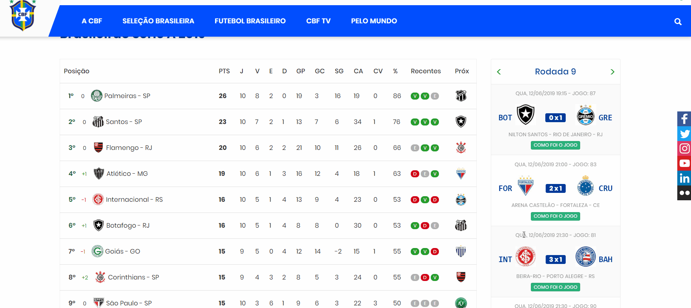

Nesse post apresentaremos um tutorial básico de web scraping utilizando o pacote rvest para extrair dados de jogos divulgadas no site da CBF. Rvest é um pacote do R que simplifica muito tarefas de scraping e te ajuda a extrair dados HTML das páginas web.
Além de limpar e organizar dados brutos, parte do nosso trabalho como analista ou cientista de dados também passa pela obtenção dos mesmos. Algumas vezes os dados já estão organizados e disponíveis para download. Mas, em outras ocasiões, embora os dados existam, não há arquivo disponível para download. É o caso dos dados e informações disponíveis nas páginas web, cuja fonte está no formato HTML, um formato não tabular. O conjunto de páginas web é uma mina de dados não tabulares, que, muitas vezes, é deixada de lado pelo desconhecimento da técnica de web scraping. Neste post, discutiremos o assunto e mostraremos como implementá-lo no R por meio do pacote rvest.
É uma técnica de extração de dados de websites de forma automatizada. A web hoje traz inúmeras informações e dados que não estão disponíveis para serem baixados em arquivos estruturados como os arquivos xlsx (excel) ou csv. Como exemplo, podemos ver a página do Wikipédia sobre o Brasil. Há uma série de informações e dados ali que não estão organizadas nem disponíveis para download.
Abaixo podemos ver que o site apresenta dados de PIB (PPC), PIB (nominal), IDH, Índice de Gini, moeda, fuso horário, entre outros dados brasileiros:

À primeira vista a extração de dados da web pode parecer mais fácil se feita manualmente, bastando um simples copia e cola. Isso funciona bem quando há poucos dados a serem extraídos. No entanto, à medida que a quantidade de dados para extração aumenta, a tarefa se torna tediosa, sujeita a erros e demorada.
Imagine ter que extrair do Wikipédia a informação dos presidentes atuais de uma lista de 100 países. Você teria que entrar na respectiva seção do Wikipédia de cada país e extrair essa informação. É algo que não faz sentido se você tem noções de web scraping. Com algumas linhas de código você conseguiria extrair as informações desejadas.
Fazer web scraping com R é bastante intuitivo graças ao pacote rvest. O ideal é conhecer um pouco de HTML para se familiarizar com a estrutura do dado, mas não é requisito necessário ter conhecimentos avançados sobre o assunto como veremos no exemplo a seguir.
Para mostrar como fazer web scraping, escolhemos um caso relativamente simples: vamos extrair dados do portal da CBF, o qual traz informações sobre as colocações dos times e resultados dos jogos do Brasileirão.
O objetivo é extrair as informações da coluna interativa lateral direita que apresenta os resultados de cada rodada. A coluna a qual nos referimos pode ser vista abaixo.

Até o momento da publicação deste post, apenas 10 rodadas do Brasileirão haviam sido realizadas. Contudo, veremos que, com o código que será construído, não precisaremos fazer esforço adicional para obter as atualizações dos resultados, uma vez que o mapeamento da estrutura de dados atual também permite mapear a atualização das rodadas futuras (estamos partindo do pressuposto de que a estrutura de HTML do portal da CBF não vai se alterar, pelo menos no curto prazo).
O primeiro passo consiste em carregar os pacotes necessários e puxar as informações HTML do portal da CBF. A função read_html se encarrega de trazer os dados HTML para o R. O único que precisamos fazer é passar o link do site na função.
library(rvest) # pacote para web scraping
library(tidyverse)
dado_cbf <- read_html("https://www.cbf.com.br")
dado_cbf
{xml_document}
<html lang="pt-BR">
[1] <head>\n<meta http-equiv="Content-Type" content="text/html; cha ...
[2] <body>\r\n <h1 style="display:none">Portal CBF</h1>\r\n\r\n < ...Para quem não está familiarizado com o formato HTML, a interpretação dos dados extraídos para o objeto dado_cbf pode parecer um obstáculo, mas, se tivermos calma para entender o formato, veremos que o entendimento é bastante tranquilo. Na verdade, o que você precisa entender é que qualquer página web é basicamente um texto com formato HTML. As informações estão contidas em tags, que por sua vez podem ter classes. Exemplos de tags são <head>, <body>, <div>, etc. Por sua vez, as classes estão ligadas a uma ou mais tags. Por exemplo, em <div class=“swipe bordas”> temos a tag div, mas também temos duas classes ligadas a essa tag: swipe e bordas. Deve-se ter cuidado para interpretar as classes. Alguém poderia pensar que se trata de uma classe única chamada "swipe bordas", mas, em HTML, o espaço separa as classes, portanto há duas classes e não uma. Com isso em mente, podemos avançar.
Para iniciarmos a extração de dados, precisamos abrir o portal da CBF e localizar os dados que desejamos “raspar”. Neste caso, estamos usando o Google Chrome, mas qualquer navegador moderno poderá servir para esta tarefa.
Depois de localizarmos os dados, clicamos em cima da informação ou do dado desejado com o botão direito do mouse e selecionamos inspecionar. Na figura abaixo, clicamos em cima do placar para inspecionar as tags e classes. Observa-se que o placar tem a tag span e possui as classes bg-blue, color-white e label-2. Por sua vez, essa tag é englobada diretamente pela tag strong com classes partida-horario e center-block.

Além disso, vamos perceber que entre a abertura e o fechamento da tag span temos um texto, que é justamente o placar que foi clicado com o botão direito do mouse. Se você clicar em diferentes placares, notará que as tags junto com as classes se repetem. Estamos observando que há um padrão nos dados HTML. É esse padrão que nos permite extrair dados de maneira automatizada.
Inspecionar dados HTML pode demorar um pouco até você pegar o jeito, mas, uma vez que você entende a estrutura, fica fácil buscar o dado pela tag e pela classe que você deseja.
Utilizando a técnica de inspeção de dados, vocês poderão localizar a principal classe de interesse: swiper-slide. Essa classe engloba todos os dados com informações das rodadas do Brasileirão.
Agora utilizamos a função html_nodes. No argumento da função pode-se passar uma classe ou uma tag, por exemplo. Para classes, devemos usar um “.” antes da classe desejada. Mas, para tags, basta inserir o nome da tag direto na função. Como apenas estamos interessados na classe swiper-slide, inserimos o argumento da seguinte forma na função html_nodes:
dado_cbf <- dado_cbf %>%
html_nodes(".swiper-slide")
print(dado_cbf)
{xml_nodeset (38)}
[1] <div class="swiper-slide " data-slide-index="0">\r\n <header ...
[2] <div class="swiper-slide " data-slide-index="1">\r\n <header ...
[3] <div class="swiper-slide " data-slide-index="2">\r\n <header ...
[4] <div class="swiper-slide " data-slide-index="3">\r\n <header ...
[5] <div class="swiper-slide " data-slide-index="4">\r\n <header ...
[6] <div class="swiper-slide " data-slide-index="5">\r\n <header ...
[7] <div class="swiper-slide " data-slide-index="6">\r\n <header ...
[8] <div class="swiper-slide " data-slide-index="7">\r\n <header ...
[9] <div class="swiper-slide " data-slide-index="8">\r\n <header ...
[10] <div class="swiper-slide " data-slide-index="9">\r\n <header ...
[11] <div class="swiper-slide active" data-slide-index="10">\r\n < ...
[12] <div class="swiper-slide " data-slide-index="11">\r\n <header ...
[13] <div class="swiper-slide " data-slide-index="12">\r\n <header ...
[14] <div class="swiper-slide " data-slide-index="13">\r\n <header ...
[15] <div class="swiper-slide " data-slide-index="14">\r\n <header ...
[16] <div class="swiper-slide " data-slide-index="15">\r\n <header ...
[17] <div class="swiper-slide " data-slide-index="16">\r\n <header ...
[18] <div class="swiper-slide " data-slide-index="17">\r\n <header ...
[19] <div class="swiper-slide " data-slide-index="18">\r\n <header ...
[20] <div class="swiper-slide " data-slide-index="19">\r\n <header ...
...Agora estamos vendo que o objeto dado_cbf possui uma sequência de linhas com várias tags do tipo div com classe swiper-slide. Cada uma dessas tags se relaciona com a coluna interativa de resultados do portal da CBF. Assim, explorando cada div, podemos extrair as informações desejadas. Por exemplo, ao explorar o HTML, vocês notarão que a tag com classe swiper-slide engloba a tag com classe aside-header que engloba a tag com classe text-center que nos leva a uma informação do número da rodada analisada. Vejamos:
rodada <- dado_cbf %>%
html_nodes(".aside-header .text-center") %>%
html_text()
print(rodada)
[1] "Rodada 1" "Rodada 2" "Rodada 3" "Rodada 4" "Rodada 5"
[6] "Rodada 6" "Rodada 7" "Rodada 8" "Rodada 9" "Rodada 10"
[11] "Rodada 11" "Rodada 12" "Rodada 13" "Rodada 14" "Rodada 15"
[16] "Rodada 16" "Rodada 17" "Rodada 18" "Rodada 19" "Rodada 20"
[21] "Rodada 21" "Rodada 22" "Rodada 23" "Rodada 24" "Rodada 25"
[26] "Rodada 26" "Rodada 27" "Rodada 28" "Rodada 29" "Rodada 30"
[31] "Rodada 31" "Rodada 32" "Rodada 33" "Rodada 34" "Rodada 35"
[36] "Rodada 36" "Rodada 37" "Rodada 38"Também é possível notar que a tag da classe aside-content engloba a tag da classe clearfix, a qual captura informações de cada jogo (como os times que jogaram e o placar do jogo). Por sua vez, a partir das informações capturadas para cada jogo de uma rodada, observa-se que a tag da classe pull-left engloba a tag da classe time-sigla, a qual traz informações textuais da sigla do time da casa. Para extrair a sigla do time que joga fora de casa, uma lógica semelhante pode ser usando a classe pull-right e a classe time-sigla. Por fim, também extraímos os placares identificando a classe correspondente partida-horario. Note que não precisamos mapear a tag diretamente ligada ao placar, mas poderíamos fazê-lo sem nenhum problema se quiséssemos. Ao encontrar as tags que possuem as informações desejadas, basta aplicar a função html_text para fazer a extração do texto desejado.
resultados <- dado_cbf %>%
html_nodes(".aside-content .clearfix")
casa <- resultados %>%
html_nodes(".pull-left .time-sigla") %>%
html_text()
fora_casa <- resultados %>%
html_nodes(".pull-right .time-sigla") %>%
html_text()
placar <- resultados %>%
html_nodes(".partida-horario") %>%
html_text() %>%
str_extract("[0-9]{1}\ x\ [0-9]{1}")Com algumas linhas de código extraímos informações do site da CBF de forma simples e rápida. O scraping é basicamente isso. Depois de “raspar” os dados podemos, finalmente, estruturá-los. Vejamos:
rodada <- 0:(length(placar)-1) %/% 10 + 1
df <- data.frame(rodada = rodada,
casa = casa,
placar = placar,
fora_casa = fora_casa,
stringsAsFactors = FALSE) %>%
filter(rodada <= 10)
rmarkdown::paged_table(df)